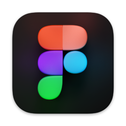
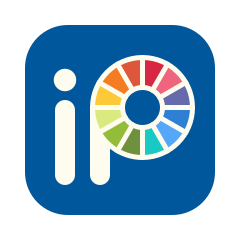

profile
改めまして
森川真衣 と申します
夙川学院高等学校
美術科
グラフィックデザインコース 卒業
↓
大阪ファッションデザイン専門学校 卒業
↓
アパレル販売員１３年
↓
創造社リカレントスクール三宮校
初歩から始めるグラフィック・Webデザイナーコース ６月修了
skill

- 
- 
未経験ですが日々スキルアップのため勉強しています！
strength
コミュニケーション
アパレル販売員として13年、接客やスタッフとのやりとりを通じて培ってきた力です。 相手の話をしっかり聞いたうえで最適な提案をするなど「相手の立場に立って伝えること」を 大切にしてきました。デザインにおいても、その視点を忘れず伝える表現を心がけています。
柔軟性
様々なお客様、スタッフと関わる中で、 状況や相手に合わせて臨機応変に対応する力を身につけました。 思いがけない問題が起きた際も冷静に柔軟な解決策を考えることが得意です。
向上心
現在は職業訓練校でグラフィックデザインを基礎から学び、日々スキルを身につけています。 わからないことは素直に質問し自分の中に落とし込んでいくことを大切にしています。 誰かの気持ちに届くデザインを常に考え制作に取り組んでいます。
like it
Music
音楽を聴くこと 邦ロック：キタニタツヤ・米津玄師・King Gnuなど ライブにも積極的に参加し歌唱だけではなく演出にも注目しています。 またクラブミュージックも好きで交友を広げる場としてクラブにも定期的に行っています。。
Fashion
学生時代からアルバイトもアパレル販売員をしていたこともありずっと大好きで、 トレンドに敏感でいれるようウインドウショッピングは定期的にしています。 雑誌Giseleを10年ほど愛読しています。